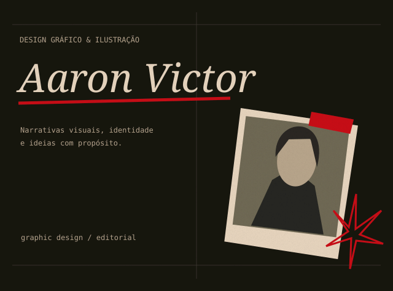
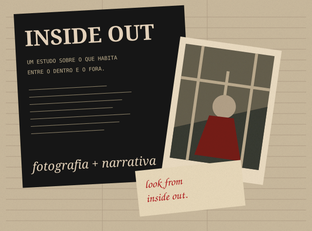
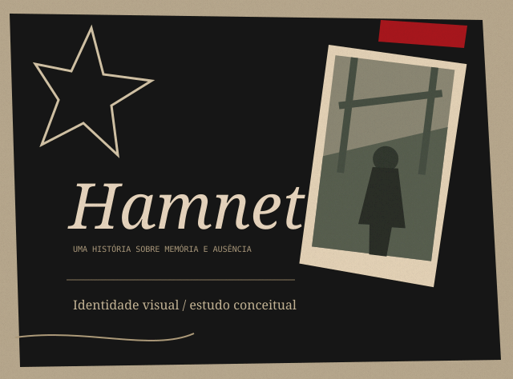

01.
Portfólio Pessoal
Exemplo fictício de portfólio com direção de arte editorial e composição em colagem.
ver projeto →Design Gráfico & Ilustração
Designer gráfico e ilustrador
com foco em narrativas visuais,
identidade e tipografia. Transformo
ideias em composições que comunicam
com propósito.
meus
Alguns dos meus trabalhos e experimentações em design gráfico, ilustração e desenvolvimento visual.

Exemplo fictício de portfólio com direção de arte editorial e composição em colagem.
ver projeto →
Exemplo fictício de projeto editorial que explora fotografia, colagem e narrativa visual.
ver projeto →
Exemplo fictício de identidade visual para uma narrativa sobre memória e ausência.
ver projeto →meus serviços
Identidade visual, artes, layouts e materiais gráficos com foco em comunicação.
Diagramação e layouts para publicações, cartazes, zines e mídias impressas e digitais.
Composição visual, conceito e estética para projetos com identidade forte.